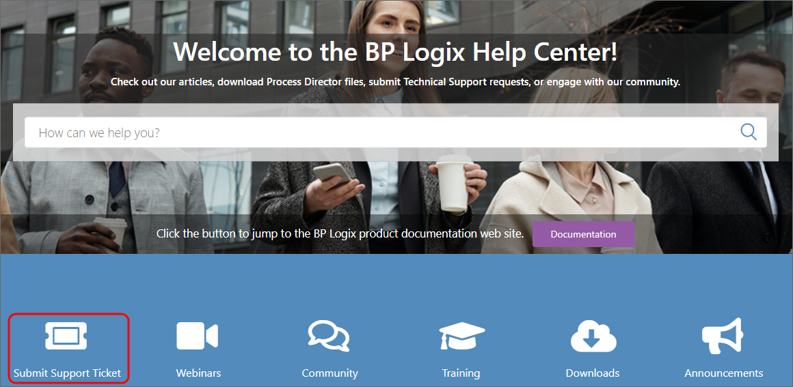

BP Logix maintains a technical support system that operates primarily through the BP Logix support site. All technical support tickets should be submitted through the support web site.
There are a some best practices to keep in mind when submitting a support ticket. These practices will make it easier for our support specialists to help you, and reduce the amount of time it takes to resolve your issue.
For most customers, two Support users are allowed to register at the support web site. You must contact your sales representative to submit names to be added to the list of Support Site users. Once BP Logix registers your user account, you'll be able to fully access the support site.
From the home page of the support site, you can create a new ticket by clicking the Submit Support Ticket button to open the Submit a Support Request form.

This button won't display unless you are logged into the Support Site.
The Submit a Support Request form contains the following fields to fill out:
Subject: A brief title to describe the nature of the issue.
Description: Please provide as detailed a description of the issue as possible.
Selected Severity: A dropdown control containing various severity levels, based on the issue's impact on your production environment. Please don't overstate the severity of the issue.
Vaccine Tracker Issue: A check box to indicate this is an issue with the pre-built Vaccine Tracker application.
Process Director Version: A dropdown from which you can select the version of Process Director you're running.
Attachments: This is a good place for you to provide additional information, such as screen shots, log files, etc.
Once you've filled out the support ticket, click the Submit button to submit it. Submitting the ticket instantly sends it to the support queue, making it visible to all of the support specialists.